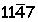
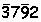
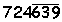
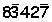
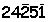
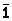
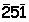
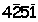

Apart from the normal PVS that we discussed about, a small modification of the PVS is interesting. It is the signed digit number system or the "Mishrank". In PVS, the digits used are greater than or equal to zero. What if the digits are allowed to be negative? The result is Mishrank. To represent negative digits, we use an overbar for the negative digit ( '-' symbol over the negative digit). For e.g.,(base 10). Here we use an overbar for '4'. The meaning of this is as follows :
= 7x 1 + (-4) x 10 + 1 x 100 + 1 x 1000
= 1067
Just to familiarize with this notation, here are a few examples.
 = 2 x 1 + (-9) x 10 + 7 x 100 + (-3) x 1000
= - 2388
 = - (9x1 + 3x10 + 6x100) + 4x1000 + 2x10000 + 7x100000
= 723361
similarly  = 77413
What is the importance of such notation in arithmetic calculations? See the following example
23849 = 9 + 40 + 800 + 3000 + 20000
= (10-1) + 40 + (1000-200) + 3000 + 20000
= (-1) + (40 +10) + (-200) + (1000+3000) + 20000
= -1 + 50 + -200 + 4000 + 20000
= 
In the above example, the number 23849 has digits greater than 5. Using mishrank, we've eliminated '8' and '9'. Here, the base is 10 and we can eliminate digits with magnitude greater than 5 using mishrank. Actually, when mishrank is used, any number can be represented just with digits whose magnitude is less than or equal to half of the base. The procedure for decimal numbers is illustrated below :
Consider the number 23849. Here, there are 2
digits greater than 5 (8 & 9). Let us start from the units place. The units digit '9'
is greater than 5. Hence, subtract it from 10 and write the difference with an overbar
(shown below). Now, decrement the next digit by 1.
->

->
This process is similar to subtraction of 2 numbers with borrow. Doing the same for the hundreds digit '8', we get
->

->

->
This process is similar for other bases too. For a digit whose magnitude is greater than half of the base, subtract the digit from the base and write the result with an overbar. Increment the next digit. Do this process until the number is fully covered.
You might be wondering about the use of mishrank in arithmetic calculations. We eliminate the digits larger than half of the base using mishrank. This reduces the possibility of carry in arithmetic computations as we'll see later in division, cubing etc. Hence, mishrank speeds up the calculation techniques further. Moreover, in our day-to-day computation, where we use decimal numbers, it is enough to remember the first 5 multiplication tables. This is because we remove digits greater than 5 by using mishrank.
if you are more interested in place value system,Solve the problems in the given link below